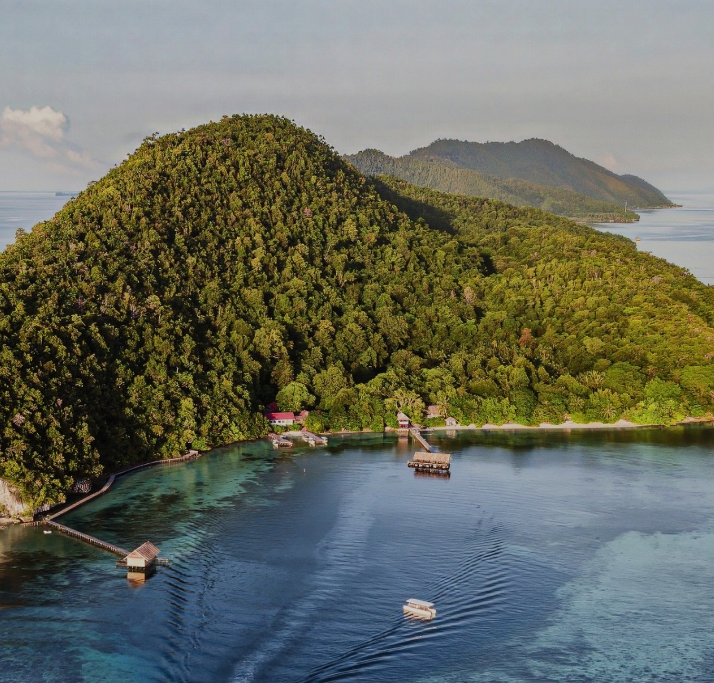
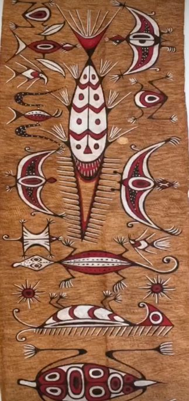
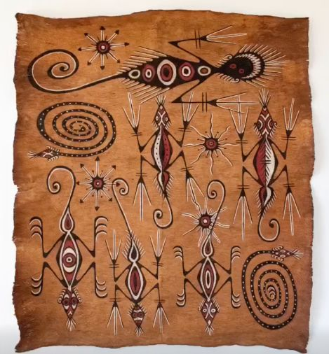
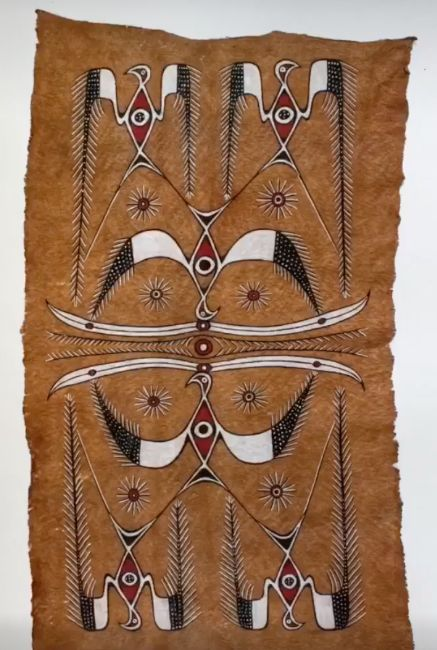
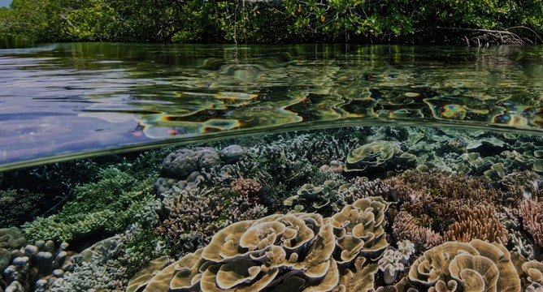

One bird. One bay.
Two ways to stay.
Papua Diving Resorts welcomes divers to Raja Ampat, West Papua. The master brand carries a heritage bird glyph drawn from Southwest Papuan bark-cloth painting, rendered in Papua Brown. Sorido Bay Resort and Kri Eco Resort sit beneath it as endorsed sub-brands, each with its own voice and colour weighting.



1× Bird Height on every side
1× = height of the bird glyph (about 32% of total logo height). Keep this margin clear of text, photo edges, borders and other logos.
Only the Natural Linen holding shape may sit inside the clear zone.
32 mm print / 120 px digital
Digital — 120 px wide
Print — 32 mm wide
Below these sizes the RESORTS line closes up. Use the bird glyph alone only where the master logo cannot reach minimum size, and only with approval.
Natural Linen holding shape

On dark or photographic surfaces the logo sits on a #F6F1EB badge with padding of at least ½ bird height. The logo is never reversed to white and never placed directly on a photograph.
Six things we never do
Do not stretch or squash.
Do not rotate or tilt.
Do not recolour the glyph.
Do not place on photos without the holding shape.
Do not add shadows or effects.
Do not crop or separate the bird from the wordmark.